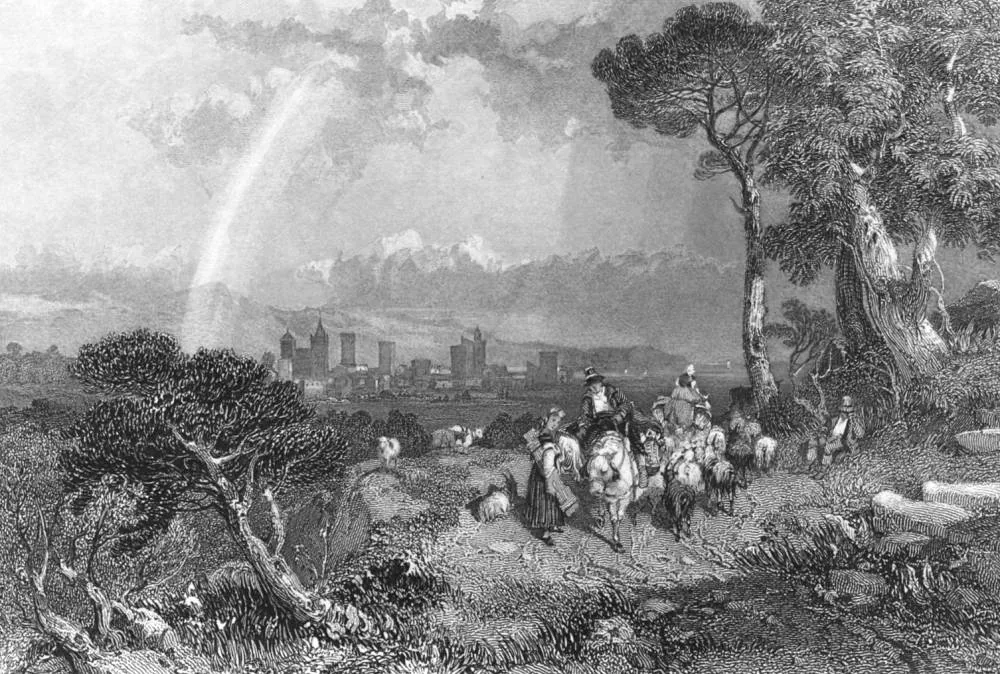

Napoleon to Joséphine · 5 April 1796
Letters from Napoleon · Chapter I To Italy · Albenga

Listen to the first sentence (French)
The letter and its translation
Il est une heure après minuit. L'on m'apporte une lettre ; elle est triste, mon âme en est affectée : c'est la mort de Chauvet.
It is one in the morning. They bring me a letter; it is sad, and my soul is shaken: it is the death of Chauvet.
Mon amie, je sens le besoin d'être consolé.
My love, I need to be comforted.
Qu'est-ce que l'avenir ? Qu'est-ce que le passé ? Qu'est-ce que nous ?
What is the future? What is the past? What are we?
Chauvet est mort ; il m'était attaché ; il a rendu à la patrie des services essentiels. Son dernier mot a été qu'il partait pour me joindre.
Chauvet is dead; he was devoted to me; he did his country great service. His last word was that he was setting out to join me.
Je suis un peu fatigué, je suis tous les jours à cheval. Adieu, adieu, adieu. Je vais dormir.
I'm a little tired; I'm on horseback every day. Goodbye, goodbye, goodbye. I'm going to sleep.
Le sommeil me console : il te place à mes côtés, je te serre dans mes bras. Mais au réveil, hélas ! je me trouve à trois cents lieues de toi.
Sleep comforts me: it puts you by my side, and I hold you in my arms. But when I wake, alas! I find myself three hundred leagues from you.
Selected sentences from the letter. The translation is our own.
Two days later, written in the small hours at headquarters in Albenga. Chauvet was the official in charge of supplies for the Army of Italy, the same man who, in the prologue, was to take books to Joseph. Barras was one of the five Directors then governing France, and knew both Joséphine and Bonaparte well. A lieue (league) was an old measure of about four kilometres.
In the app the letter arrives line by line like a message, with the meaning under each word, and you can talk with the writer. Chapter I is free.
Keep reading in the app · Google Play
Credits
- Picture: James Duffield Harding · Albenga, côte de Gênes · 1832 · Wikimedia Commons (판화, Finden's Views 계열) · Public domain (PD-Art) · source
- Letter text: Tennant 1824, Appendix No. III · Charles Tennant, A Tour through parts of the Netherlands, Holland, Germany, Switzerland, Savoy and France, in the year 1821-2 (London, Longman, 1824), vol. II, Appendix, No. III, pp. 447–448 · public domain · archive.org
- Narration: made with Supertonic 3 (Supertone Inc.), model licence OpenRAIL-M.
- All sources: Lingua Museum sources and licences